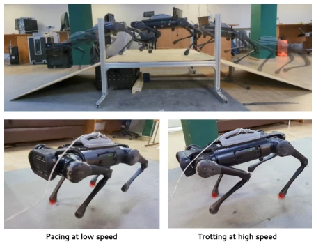
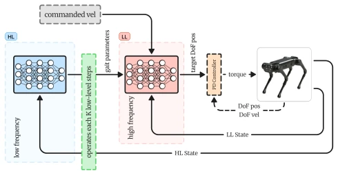
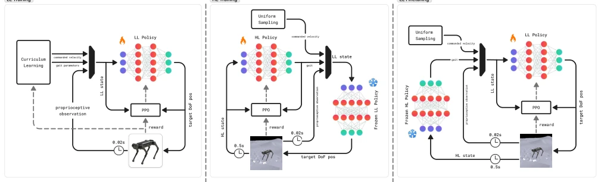
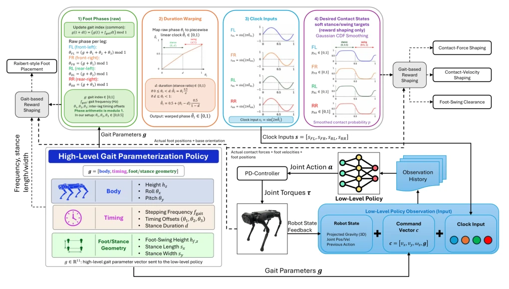
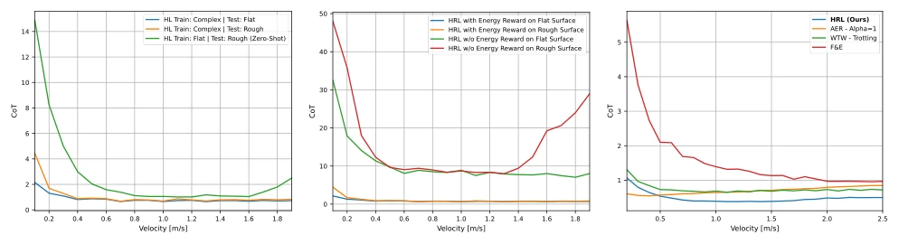
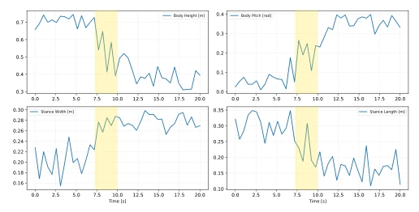
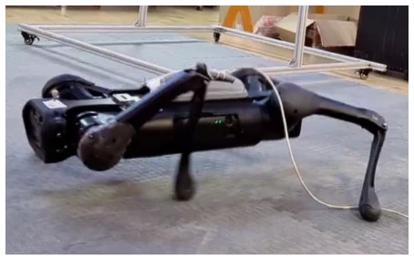
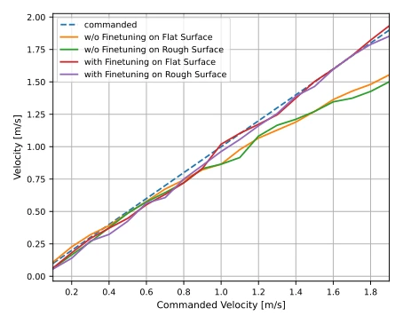
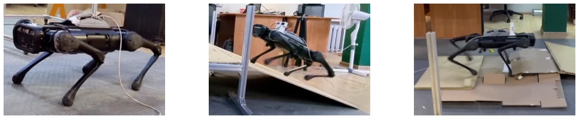

This paper proposes a "hierarchical management" for quadruped robots, separating "how to run" (high-level) from "how to run stably" (low-level), which is quite ingenious. The high-level focuses specifically on energy consumption (CoT) optimization, while the low-level is responsible for preventing falls. The result is zero-shot real-robot deployment on AlienGo, where it can automatically switch between walking and trotting at different speeds; this is far superior to end-to-end methods that arbitrarily tune weights. However, the high-level update frequency is low, so it may react slowly to sudden terrains, and the training cost is not negligible, relying on the robustness of the low-level policy. Claiming a 70% energy reduction is somewhat exaggerated; compared to baselines it is indeed better, but the actual physical significance depends on the specific scenario. In short, it is a robust HRL scheme, but do not expect it to adapt to all complex road conditions instantly like a biological organism.
For quadruped robots in long-term tasks, energy consumption is a significant drawback. Biological research demonstrates that different gaits at different speeds are more energy-efficient [1], so controllers must be adaptive. Existing methods either rely on precise models (e.g., MPC [2], [3]), use bio-inspired approaches (CPG [6], [7]), or employ end-to-end RL [11], [18]. Although end-to-end is robust, it couples gait generation, execution, and energy consumption, is too sensitive to reward design, and prone to overfitting or abnormal postures (e.g., squatting) [18]. Existing hierarchical methods [20], [21], [22] often rely on discrete switching or predefined libraries, lacking continuous energy optimization. This paper aims to decouple long-term energy optimization and short-term dynamic stability, achieving adaptive gaits without predefined libraries.

Fig. 1: Stable locomotion and slope traversal, with speed- dependent gait modulation from pacing at lower speeds to trotting at higher speeds.
The framework involves three-stage training: first train the low-level (LL) for stable tracking on flat ground, then train the high-level (HL) to optimize energy consumption on complex terrain (LL frozen), finally fine-tune LL to adapt to new terrain (HL frozen). The high-level outputs gait parameters at low frequency (e.g., inter-leg phase, frequency, height), while the low-level executes joint control at high frequency, with a time step ratio of 25. High-level states use aggregated motion statistics (average velocity, gravity vector) to avoid instantaneous noise. In the reward function, the high-level explicitly optimizes CoT (mechanical power/speed), combined with gait smoothness and low-level performance; low-level rewards ensure tracking and gait constraints. This design lets the high-level only manage "how to run energy-efficiently", and the low-level only manage "how to run without falling", decoupling long-term energy optimization and short-term dynamic stability. LL receives historical observations, HL uses asymmetric Actor-Critic. The high-level action space contains 11 parameters defining gait structure, while low-level actions are joint positions. Training is conducted in Isaac Gym using PPO, with 4096 parallel environments to ensure large-scale data collection.

Fig. 2: Overview of the hierarchical locomotion control framework. The high-level policy operates at a lower fre- quency to modulate gait parameters, while the low-level controller performs high-frequency motion execution.

Fig. 3: Three-stage training pipeline: LL policy pretraining, energy-aware HL policy training with the LL policy frozen, and LL policy finetuning with the HL policy frozen.

Fig. 4: Processing of commanded gait parameters into leg-wise phases, clock inputs, and training-time contact targets.
Tested in Isaac Gym simulation and on Unitree AlienGo real robots. Terrains include flat, rough, and slopes. Comparison baselines include WTW [15], AER [18], F&E [22]. Metrics include CoT, fall rate, and velocity tracking error. Results show HRL has lower CoT across a wide speed range, especially at high speeds. Zero-shot deployment on real robots, 10 trials all successful, can walk on 20-degree slopes. Ablation studies show that removing high-level energy reward causes CoT to skyrocket, training high-level only on flat ground leads to poor generalization on rough terrain, and LL fine-tuning significantly reduces tracking error. Compared to AER end-to-end, HRL does not exhibit instability due to squatting caused by excessive power saving.

Fig. 6: CoT evaluation of the proposed HRL framework. (a) Ablation study on the HL training terrain for the Unitree AlienGo, comparing deployment on flat and rough surfaces, including zero-shot deployment of the flat-trained HL policy on rough terrain. (b) Ablation study on the effect of the HL energy reward for the Unitree AlienGo, comparing CoT with and without the energy reward across different deployment terrains. (c) Comparison of the proposed HRL framework with existing locomotion baselines on the Unitree Go1.

Fig. 7: Realized geometrical gait parameters during a rep- resentative transition from flat terrain to a 20◦uphill slope at a fixed commanded forward velocity. The shaded interval marks the terrain-transition phase.

Fig. 8: Qualitative reward-sensitivity case for an AER-style end-to-end policy on AlienGo with α = 0.5. Excessive reduction of joint effort resulted in a crouched and unstable posture.

Fig. 9: Velocity-tracking ablation for Unitree AlienGo. “w/o finetuning” denotes the LL policy obtained after Stage 2; “with finetuning” denotes the same policy after Stage 3. Both policies are evaluated on flat and rough terrain.

Fig. 10: Representative real-world locomotion trials on flat terrain, inclined slope, and uneven rough terrain.